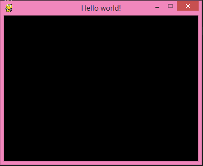
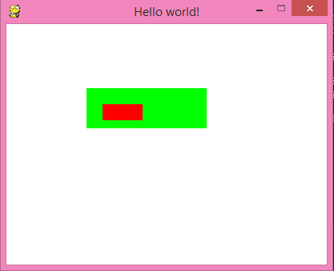

Lập Trình Game Cơ Bản Với Pygame - Phần 1
Chào mọi người! Trong bài hướng dẫn này chúng ta sẽ tìm hiểu về thư viện Pygame của Python cùng với những yếu tố trong lập trình game. Trong những bài hướng dẫn sau mình sẽ giúp các bạn vận dụng kiến thức cơ bản để tạo ra những game đơn giản để chơi nha!
Để có thể bắt đầu tìm hiểu pygame, các bạn phải biết python cơ bản kèm theo một tí kiến thức về đồ hoạ. Các bạn nhớ cài thêm thư viện pygame nhé!
Cài đặt python và thư viện kèm
Cài đặt python
Nếu các bạn chưa cài python click tại đây để được hướng dẫn.
pip install pygame
Trong bài hướng dẫn mình không thể giải thích hết cho các bạn những hàm, lệnh... trong pygame. Vì thế, các bạn cần phải tự tìm hiểu thêm qua google, youtube,... Các bạn cũng có thể lên trang này để tìm hiểu thêm về các hàm, lệnh... trong pygame.
Và đây là hướng dẫn lập trình game cho người mới bắt đầu
- Tạo cửa sổ game
- Vòng lặp game
- Bắt sự kiện
- Vẽ hình đơn giản
Trong bài hướng dẫn có những đoạn code, các bạn hãy tự tay gõ vào và chạy thử nhé! Đừng copy code nhé!
Tạo cửa sổ game
Bây giờ chúng ta tìm hiểu 1 ví dụ đơn giản như sau. Mình sẽ giải thích từng dòng cho các bạn, nên hãy yên tâm nha!
import pygame, sys
from pygame.locals import *
pygame.init()
DISPLAYSURF = pygame.display.set_mode((400, 300))
pygame.display.set_caption('Hello world!')
while True:
for event in pygame.event.get():
if event.type == QUIT:
pygame.quit()
sys.exit()
Đây là kết quả có được:

Nào, chúng ta hãy tìm hiểu từng dòng code.
import pygame, sys
from pygame.locals import *
Hai dòng trên dùng để khai báo các thư viện cần thiết.
pygame.init()
Dòng trên cần phải có để sử dụng các hàm của pygame, Chỉ cần biết khi dùng pygame thì nhớ thêm dòng này vào.
DISPLAYSURF = pygame.display.set_mode((400, 300))
Dòng này dùng để tạo cửa sổ game. Hai số trong tuple (400, 300) chính là chiều rộng và chiều cao của cửa sổ. Đơn vị độ dài hay toạ độ của đối tượng trong pygame là pixel. DISPLAYSURF là 1 biến dạng surface. Surface là gì thì mình sẽ giải thích kĩ ở phần sau nhe. Bây giờ các bạn cứ hiểu đơn giản DISPLAYSURF là cái khung đen đen ấy là được.
pygame.display.set_caption('Hello world!')
Dòng trên dùng để tạo cái tiêu đề thôi!

while True:
for event in pygame.event.get():
if event.type == QUIT:
pygame.quit()
sys.exit()
Đây là đoạn khá phức tạp với các bạn mới học lập trình game. Các bạn tập trung đoạn này nhe. Tớ sẽ giải thích đoạn code này trong các phần tiếp theo.
Vòng lặp game
Để nói cho dễ hiểu thì các chuyển động trong game cũng giống như trong phim hoạt hình. Tức là để tạo ra các chuyển động thì người ta sẽ “phát” liên tục các hình ảnh. Trong game cũng tương tự thế. Vì vậy, chúng ta cần có một vòng lặp để “vẽ” liên tục những hình ảnh. Vòng lặp while trong đoạn code trên chính là vòng lặp game.
Ví dụ, muốn cho một viên bi màu xanh chuyển động từ trái sang phải, phía sau là một nền đỏ thì phải làm như sau:
- Vẽ nền đỏ, vẽ viên bi
- Thay đổi vị trí viên bi (cho sang phải một tí)
- Lặp lại bước đầu tiên

Trong vòng lặp game còn một phần quan trọng nữa là bắt “sự kiện”. Tiếp theo chúng ta sẽ tìm hiểu về sự kiện nhé!
Sự kiện
Sự kiện trong game có thể là một cái click chuột, ấn phím….
Bây giờ cùng xem lại đoạn code này:
for event in pygame.event.get():
if event.type == QUIT:
pygame.quit()
sys.exit()
Dòng code này có tác dụng: Khi click vào nút X trên cửa sổ thì kết thúc game và đóng cửa sổ lại. Dùng biến event trong vòng for để lấy các sự kiện xảy ra. Dòng if để kiểm tra sự kiện có phải là “click nút X” hay không. Hai dòng cuối dùng để đóng chương trình.
Quay lại ví dụ về viên bi lúc nãy, nếu muốn khi ấn phím space thì viên bi nhảy lên thì phải bắt sự kiện ấn phím space, sau đó code để xử lý cho viên bi nhảy lên.
Trong lập trình game có rất nhiều sự kiện khác nhau, mình sẽ dành một phần riêng để nói về các sự kiện thường gặp.
Tóm lại, nói nãy giờ thì có thể hiểu rằng: Trong vòng lặp game có 3 việc chính: Vẽ, bắt sự kiện, thay đổi đối tượng.
Vậy là chúng ta vừa tìm hiểu xong đoạn code đầu tiên. Nếu các bạn vẫn chưa hiểu thì cũng đừng quá lo lắng, hồi xưa mình cũng vậy thôi. Hãy đọc lại, tìm hiểu thêm trên google, hoặc cũng có thể liên hệ với mình nhe!
Vẽ vài thứ lên màn hình
Như đã tìm hiểu về vòng lặp game, những lệnh vẽ sẽ nằm trong vòng lặp game. Nào, bây giờ chúng ta hãy thử tô lên cửa sổ một cái nền màu trắng và vẽ một hình chữ nhật màu đỏ nha!
import pygame, sys
from pygame.locals import *
pygame.init()
DISPLAYSURF = pygame.display.set_mode((400, 300))
pygame.display.set_caption('Hello world!')
while True:
for event in pygame.event.get():
if event.type == QUIT:
pygame.quit()
sys.exit()
DISPLAYSURF.fill((255, 255, 255))
pygame.draw.rect(DISPLAYSURF, (255, 0, 0), (100, 80, 150, 50))
pygame.display.update()
Đây là kết quả nhận được:

Tiếp tục chú ý những dòng mới thêm vào nhe!
DISPLAYSURF.fill((255, 255, 255))
Dòng trên dùng để tô màu cho cửa sổ game. Hàm fill có tham số là một tuple (hoặc list) thể hiện cho màu sắc. (255, 255, 255) thể hiện màu trắng trong hệ màu RGB.
pygame.draw.rect(DISPLAYSURF, (255, 0, 0), (100, 80, 150, 50))
Dòng này dùng để vẽ hình chữ nhật. Trong hàm rect có các tham số cơ bản như sau:
pygame.draw.rect(surface, color, rect, width)
surfacelà “chỗ” vẽ vào, cụ thể ở đây là DISPLAYSURF (tức là cái cửa sổ đấy)colorlà một tuple (hoặc list) thể hiện màu sắc, cụ thể ở đây là màu đỏrectlà một tuple (hoặc list) có 4 phần tử thể hiện cho các thông số của hình chữ nhật: hoành độ góc trên bên trái, tung độ góc trên bên trái, chiều dài, chiều cao. Gốc toạ độ là góc trên cùng bên trái, trục hoành nằm ngang hướng sang phải, trục tung thẳng đứng hướng xuống dưới, đơn vị toạ độ và độ dài là pixel. Xem hình minh hoạ cho dễ hiểu nhe!

widthlà độ dày của nét vẽ, nếu không truyền vào tham số này thì mặc định là hình chữ nhật sẽ được tô kín. Các bạn có thể thêm thông số này vào để xem thử nha!
Tìm hiểu về surface
Nếu các bạn có biết qua photoshop thì chắc hẳn các bạn biết đến khái niệm layer. Surface trong pygame cũng tương tự như thế, nó là một “lớp” ảnh trong suốt. Các surface có thể được vẽ chồng lên nhau. Biến DISPLAYSURF được dùng từ đầu đến giờ là một surface đặc biệt, nó có kích thước bằng cửa sổ game và nằm dưới cùng.
Để hiểu rõ về surface, chúng ta hãy đến 1 ví dụ cụ thể:
import pygame, sys
from pygame.locals import *
pygame.init()
DISPLAYSURF = pygame.display.set_mode((400, 300))
pygame.display.set_caption('Hello world!')
while True:
for event in pygame.event.get():
if event.type == QUIT:
pygame.quit()
sys.exit()
DISPLAYSURF.fill((255, 255, 255))
surface2rect = pygame.Surface((150, 50))
surface2rect.fill((0, 255, 0))
pygame.draw.rect(surface2rect, (255, 0, 0), (20, 20, 50, 20))
DISPLAYSURF.blit(surface2rect, (100, 80))
pygame.display.update()
Đây là kết quả:

Bây giờ tiếp tục nghiên cứu những dòng code thôi!
surface2rect = pygame.Surface((150, 50))
Dòng trên dùng để tạo một surface dài 150 pixel và cao 50 pixel. Biến surface2rect đại diện cho surface đó.
surface2rect.fill((0, 255, 0))
Dòng này dùng để tô màu xanh lá cho surface2rect.
pygame.draw.rect(surface2rect, (255, 0, 0), (20, 20, 50, 20))
Dòng trên dùng để vẽ hình chữ nhật màu đỏ lên surface2rect. Cần chú ý là hoành độ và tung độ được tính theo surface2rect chứ không phải tính theo cửa sổ game nhe!
DISPLAYSURF.blit(surface2rect, (100, 80))
Hàm blit dùng để vẽ 1 surface lên 1 surface khác. Cụ thể ở đây là vẽ surface2rect lên DISPLAYSURF. (100, 80) là vị trí để vẽ (tương tự như hoành độ và tung độ hình chữ nhật). Các bạn có thể xem ảnh minh hoạ dưới đây nhé!
Chắc sẽ có nhiều bạn nghĩ rằng chỉ cần vẽ 2 hình chữ nhật lên DISPLAYSURF là được rồi, cần gì phải tạo thêm cái surface2rect cho phức tạp. Thực ra, nếu vẽ 2 hình chữ nhật thì nếu muốn di chuyển cái hình đó thì phải thay đổi vị trí của 2 hình chữ nhật, còn nếu có suface2rect thì chỉ cần thay đổi vị trí trong hàm blit là được, nếu vẽ 1 hình càng phức tạp thì nó càng hữu ích đấy. Ngoài ra, việc sử dụng surface còn có nhiều lợi ích khác nữa, các bạn hãy tự tìm hiểu thêm nhe!
Tạm kết
Bài viết cũng sẽ khá dài rồi. Mình sẽ chia bài hướng dẫn thành nhiều phần để các bạn tiện theo dõi. Chào các bạn và hẹn gặp lại ở những bài hướng dẫn sau. Nếu có thắc mắc gì thì hãy để lại comment ở đây nha các bạn, chúng ta sẽ cùng thảo luận.
Bạn có thể tham khảo đoạn code đầy đủ tại đây
- https://codelearn.io/sharing/lap-trinh-game-co-ban-voi-pygame